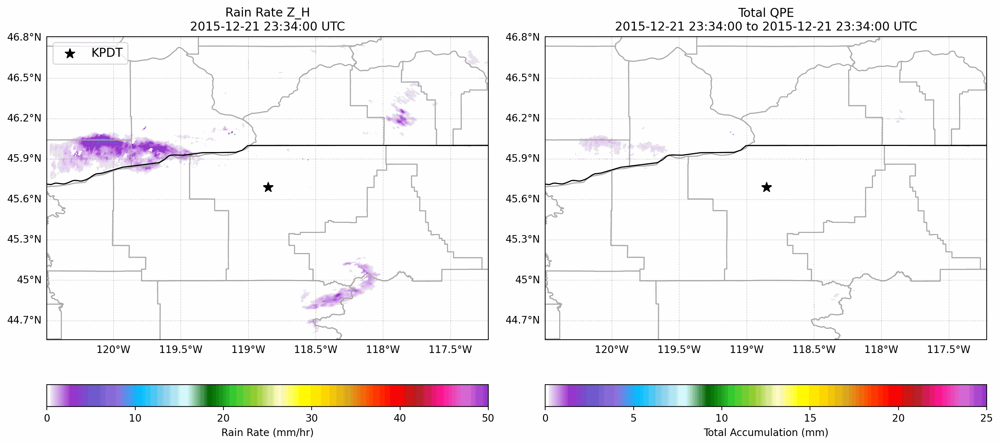
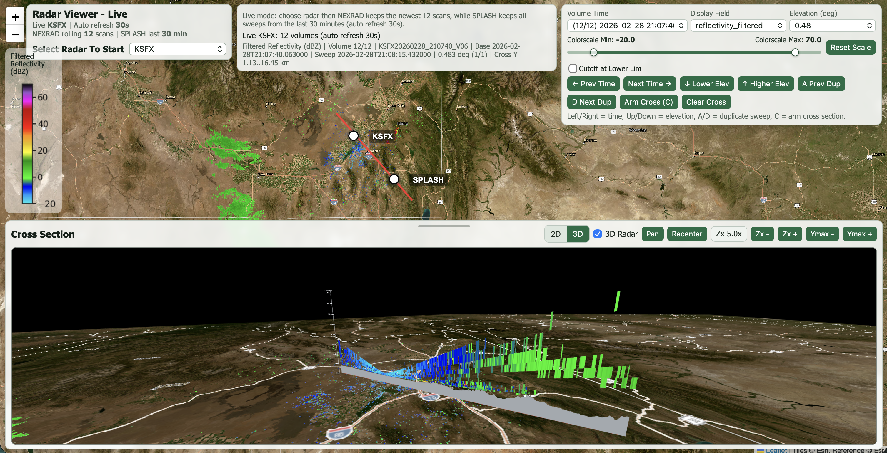

Meteorological Radar Scientist
Rainmaker Technology Corporation, Norman, OK
I am a Meteorological Radar Scientist on the research team at Rainmaker Technology Corporation. Our mission is to support sustainable water resource management through cloud seeding operations in the United States and internationally. My role focuses on building and improving the radar-based quantitative validation framework we use to assess seeding outcomes and improve operations.
Day-to-day, this means combining radar meteorology, Python-based analysis workflows, and operational reporting across real-time and post-event modes. The work spans quality control, multi-source data integration, quantitative precipitation estimation, dual-pol analysis, and visualization tools used by both science and operations teams.
Current Focus
- Designing and maintaining end-to-end QPE and validation workflows, including improved radar filtering and consistent mission-to-mission tracking.
- Building internal analysis tools (including terrain-aware radar cross sections and interactive polygon-based workflows) that speed up post-mission diagnostics.
- Integrating NEXRAD and in-house radar data with model guidance and observations (e.g., HRRR, ASOS/SNOTEL, satellite, and in-situ data) for quantitative assessment.
- Producing short- and long-form technical reports that document seeding signatures, uncertainty, and case-specific lessons learned.
- Contributing to forecast benchmarking work aimed at quantifying forecast quality and identifying the most decision-relevant predictors.


Example output from my RadarViewer tool, which supports terrain-aware cross sections and operational overlays for rapid interpretation.